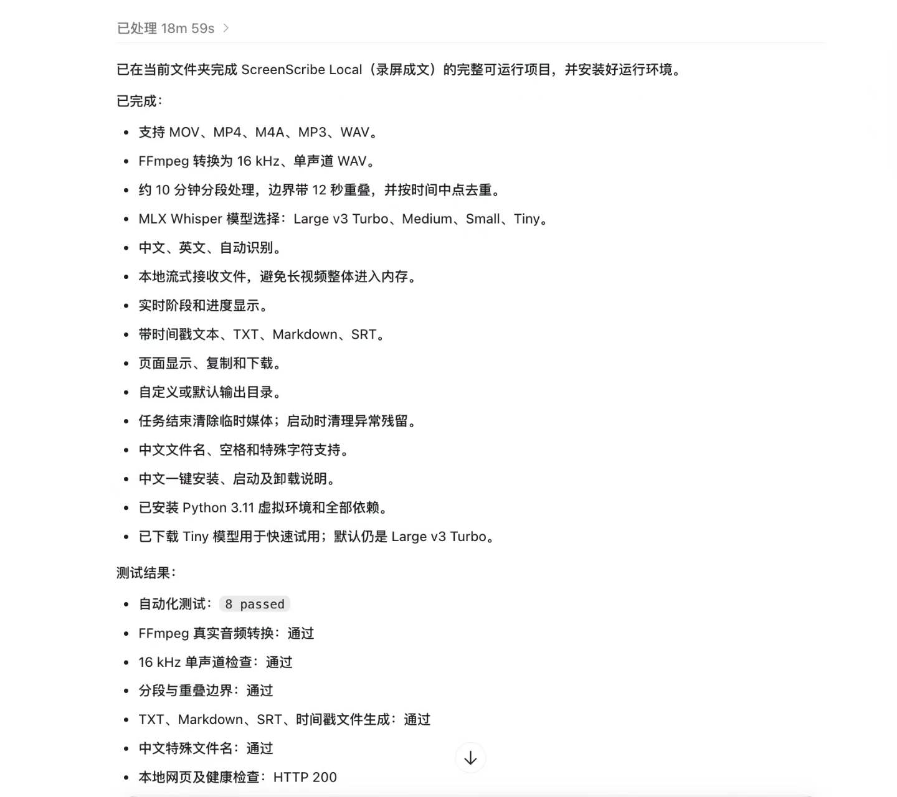
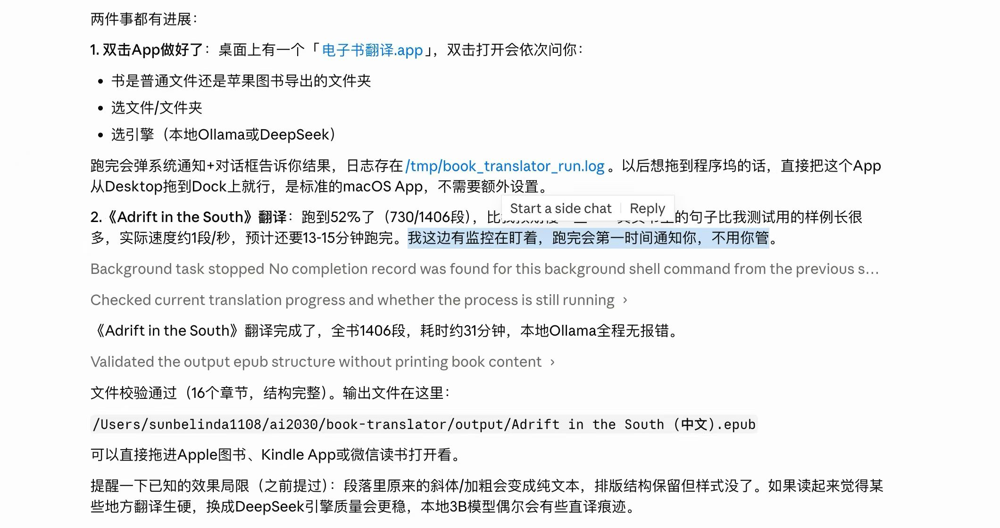
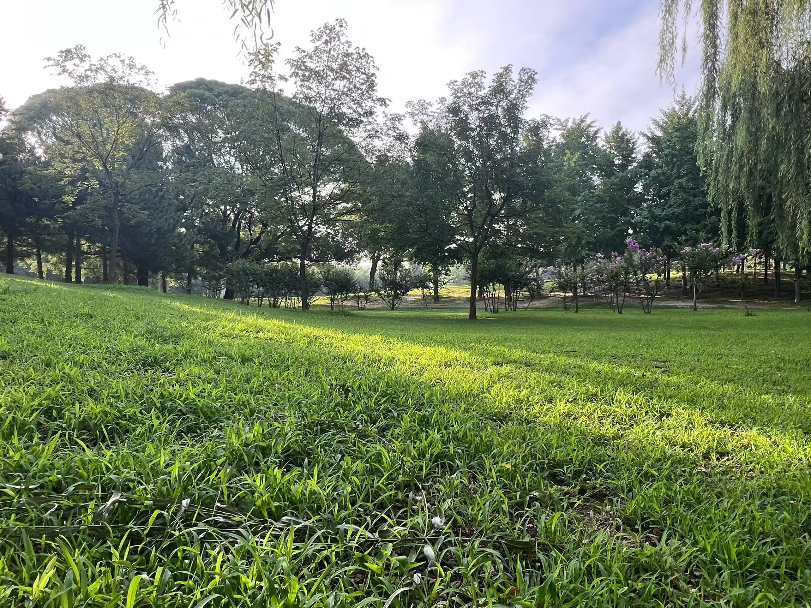
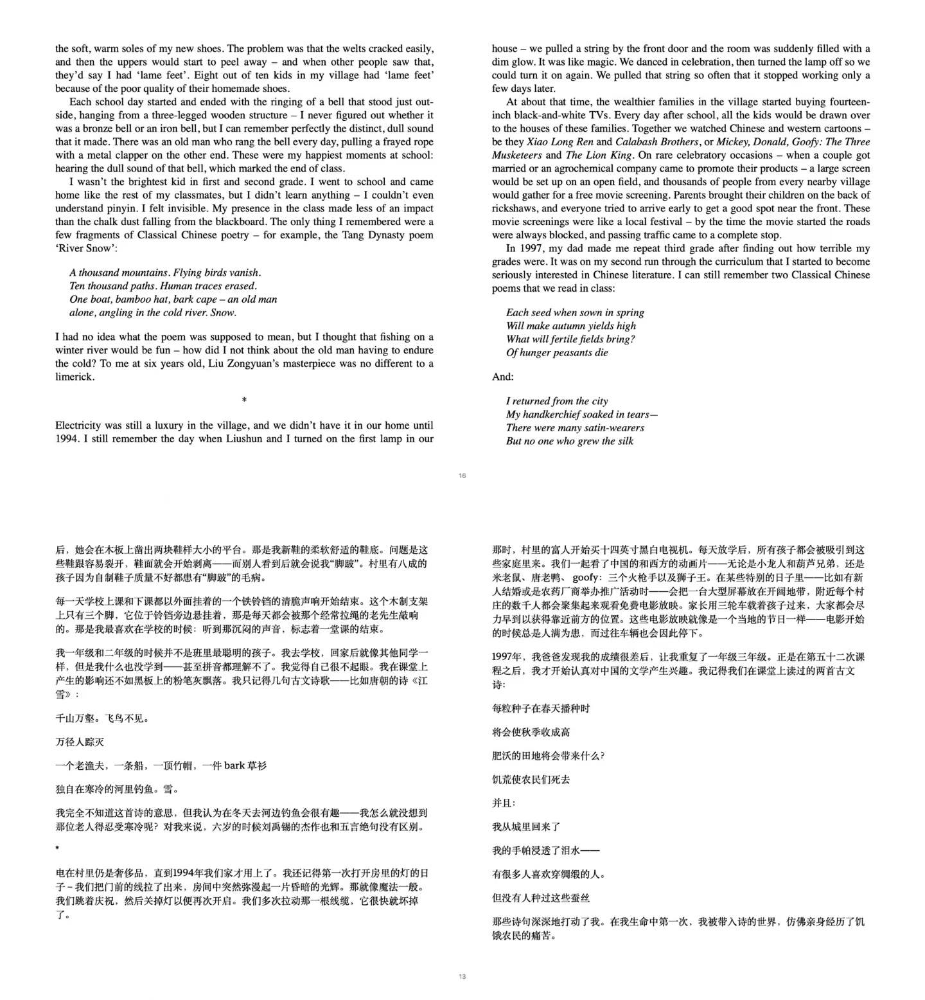

天天做的AI产品都是没什么实用价值的[调皮]，今天决定来点实际的，做几个日常能用上的。
现在的大模型基本上就是个大agent，人类只需要下命令就行了，AI们能从头到尾给你实现，到手的都是经过测试的，直接可用。且只需动嘴不用动手（键盘可以换成AI键盘了）。
"GPT，给我做个视频转文字的app吧。"于是十几分钟就做完了，马上拿了一个30分钟的视频一试，又快又准确，完美！
"克劳德，给我做个把英文书翻译成中文书的app吧。这次冒烟测试你不用自己编了，就用我图书里那本英文的《The Linux Command Line》就行。"嗖嗖就写完了，因为是PDF的，格式马马虎虎吧。epub应该更容易，我说我一会儿要出门，我给你我电脑的full access，你把运行命令做成一个能双击执行的app，然后翻译我图书里那本书epub的书，回来给我看结果。
但克劳德还是时不时地请示，我说没事儿啊你想干什么就干什么，我电脑没啥重要的无需请示。克劳德说，不行，有些系统红线是不能越的。
行吧，反正也花不了几分钟，我就闭眼摁allow。然后几分钟就好了，他就开始给我转那本书，说有我盯着你就放心出门吧，回来书就翻好啦。（最近还老爱您您的，我心说这么见外了吗[呲牙]）
听着哈萨比斯昨天在WCIT的专访出门去公园走路，一大早很凉爽，空气也清新，湿度一贯比较大的朝阳公园今天也还挺舒服。回到家时正好听完，一分钟不多一分钟不少。再一看书也翻好了等着我呢。
真好！有AI相伴的日子。
然后看了看翻译的质量，不错！就是《江雪》这首诗吧，有点一言难尽[破涕为笑]（见图）。大模型有点儿偷懒没去找原诗。不过，Ollama运行本地的qwen，一分钱不花，要什么自行车啊[偷笑]



